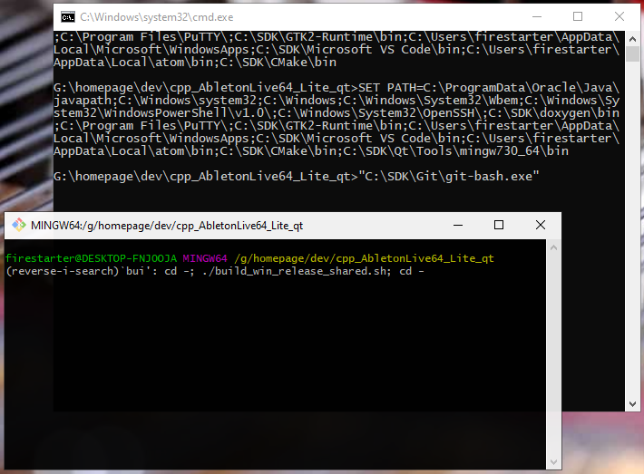

Wake up PC and myself: |
|
| 1. Start linux terminal on windows (_dev_with_gitbash.bat script) | 1.1. Navigate to workspace (Open explorer and goto desired directory) 1.2. Double click the .bat Batch script that starts the developing environment 1.3. It opens 2 windows, the cmd.exe window in background and the good git-bash terminal in front 1.4. Minimize the cmd.exe window and never think about it again 1.5. Move and resize the git-bash terminal window to your favourite pos and size. |
| 2. Build (start one of the build scripts next to .bat file) |
2.1. Press STRG+R to open terminal history 2.2. Type 3 letters bui to find last build command in history 2.3. Press ENTER and building starts... or if u never built before If u never built before type in the build command manually e.g. ./build_win_release_shared.sh and press ENTER e.g. ./build_win_release_static.sh and press ENTER e.g. ./build_win_debug_shared.sh and press ENTER e.g. ./build_win_debug_static.sh and press ENTER e.g. ./build_win_minsizerel_shared.sh and press ENTER e.g. ./build_win_minsizerel_static.sh and press ENTER e.g. ./build_win_relwithdebinfo_shared.sh and press ENTER e.g. ./build_win_relwithdebinfo_static.sh and press ENTER |
| 3. Execute program |
3.1. Press STRG+R to open terminal history again 3.2. Type 3 letters bin to find last cd command in history 3.3. Press ENTER and change to output directory. 3.4. Type the name of program and press ENTER. e.g. ./AbletonBlaBla.exe |
1. Start dev env (.bat script)
|
 |
2. Build
If u never built before type in the build command manually e.g. ./build_win_release_shared.sh and press ENTER |
|
3. Execute program
If u never built before type in the build command manually e.g. ./build_win_release_shared.sh and press ENTER |